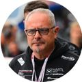

Curriculum
Intervista di 45 minuti, riscrittura completa ottimizzata per ATS e due revisioni incluse. Consegna in 5 giorni lavorativi.
da 79 €Dettagli e prezziConsulenza di carriera su misura · In tutta Italia
CV, LinkedIn, cover letter, orientamento, simulazione dei colloqui e negoziazione dell'offerta. Un percorso unico, costruito sulla tua storia professionale, con prezzi chiari fin dall'inizio.
Parti da qui
Scegli la tua situazione: ti mostro il percorso più adatto, cosa comprende e quanto costa.
Trasformiamo stage, tesi ed esperienze brevi in un profilo che un recruiter prende sul serio, e ti alleniamo al primo colloquio vero.
Servizi
Puoi sceglierli singolarmente o dentro un percorso. Ogni servizio ha un risultato concreto, tempi dichiarati e un prezzo pubblico.
Intervista di 45 minuti, riscrittura completa ottimizzata per ATS e due revisioni incluse. Consegna in 5 giorni lavorativi.
da 79 €Dettagli e prezziHeadline, sezione Informazioni, esperienze e parole chiave riscritte per farti trovare dai recruiter del tuo settore.
da 129 €Dettagli e prezziUna lettera modulare che adatti in 10 minuti a ogni candidatura, più una versione su misura per l'annuncio che ti interessa di più.
da 59 €Dettagli e prezziSessioni individuali per capire dove puntare: competenze, valori, ruoli compatibili e un piano d'azione a 90 giorni.
da 110 € a sessioneDettagli e prezziUn colloquio realistico sul ruolo che hai davanti, con registrazione e un report scritto su risposte, tono e domande da preparare.
da 119 €Dettagli e prezziBenchmark retributivo, strategia e script per la trattativa. Con l'Offer Sprint ti affianco via email fino alla firma.
da 149 €Dettagli e prezziIl metodo
Call conoscitiva al telefono e analisi di CV e LinkedIn. Mettiamo a fuoco obiettivo, ruolo target e punti di forza.
Riscriviamo documenti e profilo attorno a una storia coerente, pensata per il mercato che vuoi raggiungere.
Simulazioni in videochiamata sul ruolo reale, domande difficili, feedback registrato. Arrivi al colloquio preparato.
Leggiamo insieme l'offerta, confrontiamo i dati di mercato e prepariamo la trattativa fino alla firma.
Negoziazione dell'offerta
Ogni punto percentuale ottenuto alla firma diventa la base di tutti gli aumenti successivi. Prova a calcolare quanto vale per te.
Dal 7 giugno 2026 è in vigore il D.Lgs. 96/2026 sulla trasparenza retributiva: gli annunci devono indicare la retribuzione iniziale o la fascia prevista, e non possono chiederti quanto guadagnavi prima. È il momento giusto per negoziare con i dati in mano.
Prezzi
Tre percorsi completi, oppure i singoli servizi. Sopra i 300 € puoi pagare in 3 rate senza interessi.
oppure 3 rate da 99,67 €
oppure 3 rate da 230 €
oppure 3 rate da 463,33 €

Chi sono
Per oltre cinque anni ho lavorato in Talent Acquisition: ho selezionato ingegneri e profili STEM in Ducati, ho gestito l'intero ciclo di reclutamento per Thermo Fisher Scientific con Allegis Global Solutions, ho seguito formazione e inserimento dei neoassunti in Prometeia.
So come si legge un CV in pochi secondi, cosa cerca davvero un hiring manager e in quale momento si decide un'offerta, perché per anni è stato il mio lavoro. Poi mi sono trovata io stessa dall'altra parte della scrivania, e ho capito quanto conta avere accanto qualcuno che il processo lo conosce da dentro.
Oggi porto quell'esperienza a chi cerca il prossimo passo: neolaureati, professionisti in crescita e chi sta cambiando strada.
Recensioni
Recensioni verificate lasciate sulla pagina servizi LinkedIn di Naomi, con nome, ruolo e servizio acquistato.
27 recensioni su LinkedIn
 Alessandro ZerboOperation team leader
Alessandro ZerboOperation team leaderEsperienza eccellente con Naomi professionista seria, preparata e sempre pronta a rispondere a ogni dubbio con estrema cortesia.
 Marco DevetakExecutive Manager · Business Development Leader
Marco DevetakExecutive Manager · Business Development LeaderNaomi ha saputo capire e analizzare le mie richieste, dando al mio CV una forma più accattivante, veicolando più info in meno spazio…
 Paolo RossiSr. Logistics & Operations Manager · 25+ anni Supply Chain
Paolo RossiSr. Logistics & Operations Manager · 25+ anni Supply ChainNaomi si è dimostrata una vera professionista. Ha approfondito tematiche che erano per me quasi sconosciute.
Ho avuto il piacere di affidarmi a Naomi e posso dire di essere pienamente soddisfatto del lavoro svolto.
Molto professionale e gentile, consigliata.
È una ragazza seria, educata e molto professionale.
La consulenza offerta da Naomi è risultata molto soddisfacente, con un approccio professionale ed efficace.
Chiara, veloce e professionale.
Ho deciso di lavorare con Naomi perché la sua proposta rispondeva esattamente alla mia esigenza del momento…
Disponibile e professionale.
Naomi è disponibile, gentile e tempestiva.
È stata in grado di capirmi subito, ha rispettato le linee guida come ci eravamo stabilite e ha reso possibile questo progetto…
Professionale, rapida e sempre disponibile ad ascoltare le mie esigenze con molta pazienza! La raccomando anche per la incisività del testo redatto.
Ho chiesto a Naomi di aiutarmi con il mio CV e con la cover letter, e sono rimasto davvero soddisfatto del risultato.
Naomi ha perfezionato il mio CV e la mia lettera di presentazione aiutandomi a far emergere in maniera più chiara le mie competenze.
Persona costruttiva, collaborativa, molto brava nel suo lavoro.
Naomi has done a nice job. She revised my CV layout and gave me good suggestions. She was very fast and professional.
Consiglio Naomi, che con precisione, comunicazione e concretezza riesce a stendere un profilo tailor-made. Tempestiva nelle risposte.
Servizio preciso e puntuale, e una professionista super disponibile.
Rapida, precisa, attenta al risultato ed efficiente. Sono molto soddisfatto del servizio offerto.
Professionista seria e preparata, con un approccio attuale e moderno. Grazie Naomi.
Ho apprezzato molto la sua capacità nel comprendere le mie richieste e la velocità con cui le ha tradotte in un CV moderno, sintetico e di sicura efficacia.
Professionale, disponibile e molto competente.
Lavorare con Naomi è stato un vero piacere. Professionalità e risultati eccellenti!
 Emiliano FolegnaniProduct Specialist · Informazione Scientifica
Emiliano FolegnaniProduct Specialist · Informazione ScientificaMolto gentile e disponibile, mi ha aiutato a correggere e integrare il curriculum cercando di evidenziare i punti salienti, rendendolo più snello ed efficace.
Professionista molto preparata, rapida ed efficiente.

Alberto TontiTeam Manager · Sporting DirectorAvevo bisogno di revisionare il mio CV e renderlo più chiaro. Dopo vari contatti con altri professionisti, che comunque erano tutti validissimi…
Domande frequenti
Dipende dal momento. Le sessioni vere e proprie (orientamento, coaching, simulazione del colloquio e negoziazione dell'offerta) si fanno in videochiamata: 60 minuti, con un riepilogo scritto dei prossimi passi. Per tutto il resto, dalla call conoscitiva all'intervista per il CV, ci sentiamo al telefono.
Cinque giorni lavorativi dall'intervista iniziale. Con la consegna express ne bastano tre.
Sì. Nei percorsi Costellazione la doppia versione è inclusa; negli altri casi è un'opzione aggiuntiva.
Anticipiamo la tappa sull'offerta. La negoziazione ha i tempi dell'azienda, non i nostri.
Sì, per importi sopra i 300 € puoi dividere il pagamento in 3 rate al momento della prenotazione.
Audit gratuito
Mandami il link al tuo LinkedIn: entro 48 ore ricevi un report con i tre interventi che faranno la differenza. Senza impegno.